<!DOCTYPE html>
<html>
  <head>
    <!-- Libraries -->
    <script src="js/jspsych-6.3.0/jspsych.js"></script>
    <!-- Plugins -->
    <script src="js/jspsych-6.3.0/plugins/jspsych-html-keyboard-response.js"></script>
    <script src="js/jspsych-6.3.0/plugins/jspsych-html-button-response.js"></script>
    <script src="js/jspsych-6.3.0/plugins/jspsych-instructions.js"></script>
    <script src="js/jspsych-6.3.0/plugins/jspsych-survey-multi-choice.js"></script>
    <script src="js/jspsych-6.3.0/plugins/jspsych-fullscreen.js"></script>
    <script src="js/jspsych-6.3.0/plugins/jspsych-call-function.js"></script>
    <script src="js/jspsych-6.3.0/extensions/jspsych-ext-webgazer.js"></script>
    <script src="js/jspsych-6.3.0/plugins/jspsych-webgazer-init-camera.js"></script>
    <script src="js/jspsych-6.3.0/plugins/jspsych-webgazer-calibrate.js"></script>
    <script src="js/jspsych-6.3.0/plugins/jspsych-webgazer-validate.js"></script>
    <script src="js/custom_jspsych-plugins/two-gamble-sequence.js"></script>

    <!-- Load stimulus file -->
    <script src="stimuli/conditions.js"></script>
    <script src="stimuli/practice.js"></script>
    <script src="stimuli/quiz.js"></script>

    <link rel="stylesheet" href="js/jspsych-6.3.0/css/jspsych.css" />
  </head>

  <body>
    <script src="js/webgazer.js"></script>
    <script>
      // Experiment settings
      const fixationDuration = 500; // this is in ms
      const withinBlockBreakDuration = 30 * 1000; // in ms, too
      const getReadyDuration = 5 * 1000;
      const countdownDuration = 3 * 1000;
      const breakAfter = 41; // how many trials until a break is shown
      const choiceTimeout = 3000;
      const feedbackColor = "Gold";
      const stimBackgroundColor = "#999";
      const stimForegroundColor = "#DDD";
      const stimFrameColor = "#DDD";
      var timeline = [];
      var trialCounter = 1;
      var repeatPractice = false;

      // Quiz parameters
      var nQuestions = 3; // How many questions from the pool to ask
      var nCorrectRequired = 3; // How many questions have to be answered correctly
      var nCorrect = 0;
      var reminder_pages = [];
      var questionSample = [];
      // Draw random questions from the question pool
      questionSample = jsPsych.randomization.sampleWithoutReplacement(
        questions,
        nQuestions
      );

      var fixation = {
        type: "html-keyboard-response",
        stimulus: '<p style="font-size:40px;">+</p>',
        choices: jsPsych.NO_KEYS,
        trial_duration: fixationDuration,
      };

      /* Welcome and Full Screen */
      var welcomeFullScreen = {
        type: "fullscreen",
        message: `
        <div style="max-width: 800px">
        <h1><br><br>Welcome</h1>
        <p align="justify">Thank you for choosing to participate in this study. Our aim is to better understand how people make decisions.<br>
        We are also interested in people's looking behaviour during decision making, therefore this study includes <strong>webcam-based eye tracking</strong>.
        The study will take less than 30 minutes to complete. Please assure that you can be focused and undisturbed for this time.
        To make sure the study runs smoothly, please</p>
        <ul>
        <li style="text-align: left;"><strong>close any unnecessary programs</strong></li>
        <li style="text-align: left;"><strong>close any other browser tabs </strong>that could produce<strong> popups </strong>or<strong> alerts</strong></li>
        <li style="text-align: left;"><strong>mute </strong>your <strong>cell phone</strong> and make sure that it will not distract you</li>
        </ul>
        <p align="justify">The study will switch to fullscreen mode when you press the button below. Once this study has started, <strong>please do not exit fullscreen mode</strong>.</p>
        </div>`,
        fullscreen_mode: true,
        // on_finish: () => (document.body.style.cursor = "none"),
        button_label: "I'm ready to continue.",
      };

      /* Initial Eye tracking setup */
      var init_camera = {
        type: "webgazer-init-camera",
      };

      var calibration_instructions = {
        type: "html-keyboard-response",
        stimulus: `
      <p>Great! Now the eye tracker will be calibrated to translate the image of your eyes from the webcam to a location on your screen.</p>
      <p>To do this, you need to click a series of dots.</p>
      <p>Keep your head still, and click on each dot as it appears. Look at the dot as you click it.</p>
      <p>Press spacebar to start.</p>
    `,
        choices: ["spacebar"],
        post_trial_gap: 1000,
      };

      var calibration = {
        type: "webgazer-calibrate",
        randomize_calibration_order: true,
      };

      var validation_instructions = {
        type: "html-keyboard-response",
        stimulus: `
      <p>Let's see how accurate the eye tracking is. </p>
      <p>Keep your head still, and move your eyes to focus on each dot as it appears.</p>
      <p>You do not need to click on the dots. Just move your eyes to look at the dots.</p>
      <p>Press spacebar to start.</p>
    `,
        choices: ["spacebar"],
        post_trial_gap: 1000,
      };

      var validation = {
        type: "webgazer-validate",
        validation_points: [
          [25, 25],
          [25, 75],
          [75, 25],
          [75, 75],
          [50, 50],
        ],
        validation_point_coordinates: "percent",
        randomize_validation_order: true,
        show_validation_data: true,
      };

      /* Sequential presentation gamble choice task */
      var seqGambleInstruction = {
        type: "html-keyboard-response",
        stimulus: `
        <div style="max-width: 800px">
        <h1><br><br>Decision-making task</h1>
        <p align="justify">
        In the next trials, you will make choices between two risky lotteries.
        Each lottery describes the prospect to win an amount between £0.1 and £10 with some probability. The possible winning amount is illustrated as a filled rectangular bar. The more filled it is, the higher the possible winning <strong>amount</strong>. The <strong>probability</strong> of winning is illustrated with a pie chart. The more it is filled, the higher the probability of winning this lottery's amount.<br><br>
        Information over the two lotteries is shown to you in a rapid sequential presentation.
        After the presentation sequence, you will be prompted to make a choice <strong>within ${
          choiceTimeout / 1000
        } seconds</strong>!<br>
        <p align="justify">After you completed a total of 164 choice trials, the computer will randomly determine one of the lotteries you chose and play it out - according to its winning probability and amount - as a <strong>bonus payment</strong>. This way, you should ideally treat every choice as if it was relevant to determine your chance for a bonus payment.</p>
        <p>Press the <strong><em>SPACE BAR</em></strong> to continue.</p>
        </div>`,
        post_trial_gap: 1000,
        choices: ["spacebar"],
      };

      /* Comprehension quiz */
      var quiz = {
        type: "survey-multi-choice",
        preamble: `
        <div style="max-width: 800px">
        <h1><br><br>Comprehension check</h1>
        <p>Please answer these questions to make sure that you understood the instructions. You will be able to re-read them if you get something wrong.</p>
        </div>`,
        questions: function () {
          return questionSample;
        },
        randomize_question_order: false,
        button_label: "Submit answers",
        on_start: function () {
          document.body.style.cursor = "auto";
          nCorrect = 0;
        },
        on_finish: function (data) {
          data.questions = questionSample; // Save questions that were asked

          // Count correct responses
          var responses = JSON.parse(data.responses);
          var i;
          for (i = 0; i < questionSample.length; i++) {
            var response = responses["Q" + i];
            var correct =
              response ==
              questionSample[i]["options"][questionSample[i]["correct"]];
            if (correct) {
              nCorrect++;
            } else {
              // Add reminders for wrong answers
              reminder_pages.push(questionSample[i]["reminder"]);
            }
          }
          // Draw a new sample of questions
          questionSample = jsPsych.randomization.sampleWithoutReplacement(
            questions,
            nQuestions
          );
        },
      };

      // Show reminders for questions with wrong answers.
      reminders = {
        type: "instructions",
        show_page_number: true,
        page_label: "Reminder",
        key_forward: "spacebar",
        pages: function () {
          return reminder_pages;
        },
        on_finish: function () {
          reminder_pages = [];
        },
      };

      // Put the quiz procedure together
      seqGambleQuiz = {
        timeline: [
          quiz,
          {
            timeline: [reminders],
            conditional_function: function () {
              return nCorrect < nCorrectRequired;
            },
          },
        ],
        loop_function: function () {
          return nCorrect < nCorrectRequired;
        },
      };

      /* Sequential gamble presentation task */
      var seqGambleChoice = {
        type: "two-gamble-sequence",
        stimulus: function () {
          stim = {
            p0: jsPsych.timelineVariable("p0", true),
            p1: jsPsych.timelineVariable("p1", true),
            m0: jsPsych.timelineVariable("m0", true) / 10,
            m1: jsPsych.timelineVariable("m1", true) / 10,
            phase: jsPsych.timelineVariable("phase", true),
            condition: jsPsych.timelineVariable("condition", true),
          };
          console.log("Stimulus:", stim);
          return stim;
        },
        sequence: function () {
          console.log("Sequence:", jsPsych.timelineVariable("sequence", true));
          sequence = JSON.parse(jsPsych.timelineVariable("sequence", true));
          return sequence;
        },
        choices: ["F", "J"],
        choiceTimeout: choiceTimeout,
        stimBackgroundColor: stimBackgroundColor,
        stimForegroundColor: stimForegroundColor,
        stimFrameColor: stimFrameColor,
        feedbackColor: feedbackColor,
        on_start: () => (document.body.style.cursor = "none"),
        on_finish: function (data) {
          console.log("Trial data:", data);
          trialCounter++;
        },
        extensions: { type: "webgazer" },
      };

      // Break screen procedure (break + get-ready countdown)
      var withinBlockBreak = {
        timeline: [
          {
            type: "html-keyboard-response",
            on_start: () => (document.body.style.cursor = "none"),
            stimulus: `
            <div style="max-width: 800px">
            <h1><br><br>Short break</h1>
            <p>Great job! Take a short break to make sure that you are focused for the next set of trials, but try to keep your head in position.</p>
            <p>Press the <strong><em>SPACE BAR</em></strong> to continue immediately.</p>
            </div>`,
            choices: ["spacebar"],
            trial_duration: withinBlockBreakDuration,
          },
          {
            type: "call-function",
            func: function () {
              start_time = Date.now();
              timer_ticks = setInterval(function () {
                var time_elapsed = Math.floor(Date.now() - start_time);
                var time_remaining = getReadyDuration - time_elapsed;
                if (time_remaining <= countdownDuration) {
                  document.querySelector("#timer").innerHTML = `${Math.floor(
                    time_remaining / 1000 + 1
                  )}`;
                  document.querySelector("#timer").style.color = "orangered";
                }
              }, 1000);
            },
          },
          {
            type: "html-keyboard-response",
            on_start: () => (document.body.style.cursor = "none"),
            stimulus: `
            <div style="max-width: 800px">
            <h1><br><br><span id="timer">Get ready!</span></h1>
            </div>`,
            choices: null,
            trial_duration: getReadyDuration,
            on_finish: function () {
              clearInterval(timer_ticks);
            },
            post_trial_gap: 2000,
          },
        ],
        conditional_function: function () {
          if (trialCounter == breakAfter) {
            return true;
          } else {
            return false;
          }
        },
      };

      seqGamblePractice = {
        timeline: [
          {
            type: "html-keyboard-response",
            stimulus: `
            <div style="max-width: 800px">
            <h1><br><br>Practice</h1>
            <p align="justify">Now you will perform a couple of practice trials that look just like the ones in the main task, but don't count for the possible bonus winning.</p>
            Press the <strong>F</strong> key to choose the left gamble and the <strong>J</strong> key to choose the right gamble.<br>
            Place your fingers on these keys now.</p>
            <p>Press <strong><em>SPACE BAR</em></strong> to start practice.</p>
            </div>`,
            choices: ["spacebar"],
          },
          {
            timeline: [fixation, seqGambleChoice],
            timeline_variables: practice,
            randomize_order: false,
          },
          {
            type: "html-keyboard-response",
            stimulus: `
            <div style="max-width: 800px">
            <h1><br><br>Practice finished!</h1>
            <p>Good job. You finished the practice trials!</p>
            <p>If everything is clear, press <strong><em>SPACE BAR</em></strong> to start the main task.</p>
            <p>To repeat practice, press <strong><em>R</em></strong>.</p>
            </div>`,
            choices: ["spacebar", "R"],
            on_finish: function (data) {
              if (jsPsych.pluginAPI.compareKeys(data.key_press, "R")) {
                repeatPractice = true;
              } else {
                repeatPractice = false;
              }
            },
          },
        ],
        loop_function: function () {
          return repeatPractice;
        },
      };

      seqGambleMainTaskBlock1 = {
        timeline: [
          {
            type: "html-keyboard-response",
            stimulus: `
            <div style="max-width: 800px">
            <h1><br><br>Main task</h1>
            <p align="justify">Get ready for the main task. You will perform two blocks of this task with breaks in between. Please remember to keep your head still, and focus on the red dots between trials. Good luck!</p>
            <p>Press <strong><em>SPACE BAR</em></strong> to start the main task.</p>
            </div>`,
            choices: ["spacebar"],
            post_trial_gap: 2000,
          },
          {
            timeline: [withinBlockBreak, fixation, seqGambleChoice],
            timeline_variables: conditions.filter(function (trial) {
              return trial.block == 0;
            }),
            randomize_order: true,
          },
        ],
      };

      seqGambleMainTaskBlock2 = {
        timeline: [
          {
            timeline: [withinBlockBreak, fixation, seqGambleChoice],
            timeline_variables: conditions.filter(function (trial) {
              return trial.block == 1;
            }),
            randomize_order: true,
          },
        ],
      };

      /* Realization */
      var chosenTrial;
      var wonAmt;
      var winString;
      var realization = {
        timeline: [
          {
            type: "call-function",
            func: function () {
              var experimentalTrials = jsPsych.data
                .get()
                .filter({ phase: "experimental" })
                .values();
              chosenTrial = experimentalTrials[0];
              console.log("Randomly chosen trial:", chosenTrial);
              if (chosenTrial.chosenM != undefined) {
                chosenGambleString = `
                <p align="justify">The computer chose trial number ${
                  Number(chosenTrial.condition.substring(4)) + 1
                } where you chose the lottery with a winning probability of ${Math.round(
                  chosenTrial.chosenP * 100
                )}% and possible winning amount of £${(
                  chosenTrial.chosenM * 10
                ).toFixed(
                  2
                )}. The computer then played this lottery out and determined the result:</p>`;
                var rndNmbr = Math.random();
                if (rndNmbr < chosenTrial.chosenP) {
                  wonAmt = chosenTrial.chosenP;
                  winString = `<h2 style="color:ForestGreen">Congratulations! You won an additional £${(
                    chosenTrial.chosenM * 10
                  ).toFixed(2)}!</h2>`;
                } else {
                  wonAmt = 0;
                  winString = `<h2 style="color:OrangeRed">Unfortunately you did not win a bonus.</h2>`;
                }
              } else {
                chosenGambleString = `<p align="justify">The computer randomly chose a trial where you did not respond in time.</p>`;
                winString = `<h2 style="color:OrangeRed">Unfortunately you did not win a bonus.</h2>`;
              }
            },
          },
          {
            type: "html-keyboard-response",
            choices: ["spacebar"],
            stimulus: function () {
              return (
                `<div style="max-width: 800px">
        <h1><br><br>Bonus payment</h1>` +
                chosenGambleString +
                winString +
                "<p>Press <strong><em>SPACE BAR</em></strong> to continue.</p>"
              );
            },
          },
        ],
      };

      var debriefing = {
        type: "html-button-response",
        choices: ["CSV", "JSON", "No thanks."],
        stimulus: `
        <div style="max-width: 800px">
        <h1><br><br>Study completed!</h1>
        <p align="justify">Thank you for your participation! In this study, we were specifically interested in how the order and duration of information presentation influences choices.<br>
        If you'd like to download a copy of the data to explore, click the format you'd like below.<br>
        You will then be redirected back to Prolific, where this study will be marked as completed.</p>`,
        on_start: () => (document.body.style.cursor = "auto"),
        on_finish: function (data) {
          if (data.button_pressed == 0) {
            console.log("Data download request as .csv ");
            jsPsych.data.get().localSave("csv", "decision-experiment.csv");
          }
          if (data.button_pressed == 1) {
            console.log("Data download request as .json");
            jsPsych.data.get().localSave("json", "decision-experiment.json");
          }
        },
      };

      jsPsych.init({
        timeline: [
          init_camera,
          welcomeFullScreen,
          calibration_instructions,
          calibration,
          validation_instructions,
          validation,
          seqGambleInstruction,
          seqGambleQuiz,
          seqGamblePractice,
          seqGambleMainTaskBlock1,
          seqGambleMainTaskBlock2,
          realization,
          debriefing,
        ],
        on_finish: function () {
          window.location = "http://www.fallingfalling.com";
        },
        extensions: [{ type: "webgazer" }],
      });
    </script>
  </body>
</html>
